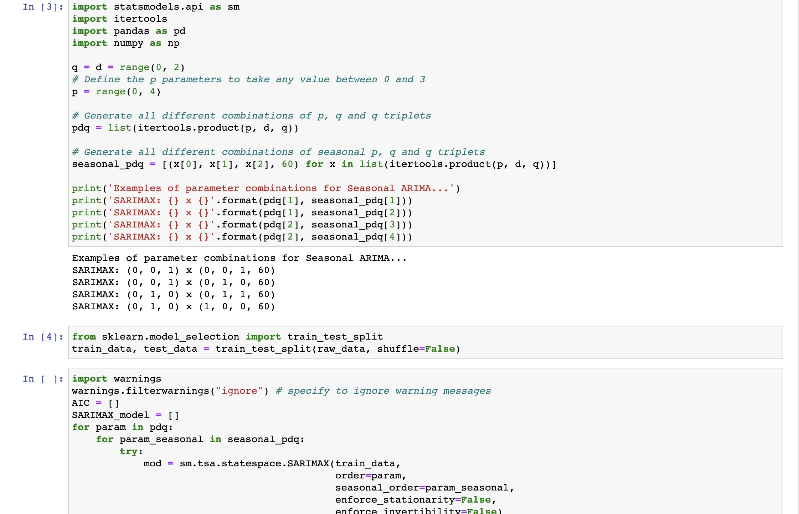

conda是一个python虚拟环境管理软件，它允许你为每一个python项目创建独立的环境，如果你被python的环境问题折磨过，那么你就会知道conda有多好用。而Anaconda则是python的一个发行版本，也是conda的图形化版本。有了Anaconda，每次在运行一个新的python项目时，你都应该重新创建一个python env，并且在该env下安装python包、执行命令
安装Anaconda(conda)
推荐清华源下载最新的版本，或者合适的版本，注意选择合适你的操作系统和处理器架构的安装包。如果是在没有图形界面的服务器上，推荐安装Miniconda
Anaconda的安装有图形化界面，在此就不再赘述，没有特殊要求的话，使用默认配置一路点继续就可以了，需要注意的是，在安装过程中记得勾选将conda配置进系统环境变量中
Miniconda安装包下载下来之后是一个.sh脚本文件，对其添加执行文件后，直接利用bash执行然后按照步骤安装即可
1
2
3wget https://mirrors.tuna.tsinghua.edu.cn/anaconda/miniconda/Miniconda-x.x.x-Linux-x86_64.sh
sudo +x Miniconda-x.x.x-Linux-x86_64.sh
./Miniconda-x.x.x-Linux-x86_64.sh
注意Miniconda安装时它会询问你是否要运行conda init，请选择yes，此步的作用是将conda的配置写入你的shell配置文件中，安装完成后，可以查看你的shell配置文件是否包含
1
2
3
4
5
6
7
8
9
10
11
12
13
14# >>> conda initialize >>>
# !! Contents within this block are managed by 'conda init' !!
__conda_setup="$('/Users/xingguangjie/opt/anaconda3/bin/conda' 'shell.zsh' 'hook' 2> /dev/null)"
if [ $? -eq 0 ]; then
eval "$__conda_setup"
else
if [ -f "/Users/xingguangjie/opt/anaconda3/etc/profile.d/conda.sh" ]; then
. "/Users/xingguangjie/opt/anaconda3/etc/profile.d/conda.sh"
else
export PATH="/Users/xingguangjie/opt/anaconda3/bin:$PATH"
fi
fi
unset __conda_setup
# <<< conda initialize <<<conda指令，请重新安装或者切换到conda的安装目录中（执行安装脚本的时候有写），手动执行conda init
1
./conda init
完成安装后，在终端中输入conda --versin可正常运行即可（Windows可以在开始-应用程序中找到anaconda
prompt作为终端使用）
conda常用命令
有了Anaconda，就可以在Anaconda Navigator里面创建虚拟环境、安装包等等，但是不推荐使用，更加常见的方式还是直接通过命令行与conda交互，下面列举几条常见的命令
- 激活一个环境（切换到已有的环境中）
1 | conda activate base # 切换到名字为base的环境下（刚刚安装好conda没有创建新环境的情况下默认只有base环境） |
- 从环境中退出
1 | conda deactivate |
- 创建一个新环境，并且指定环境的python版本
1 | conda create -n test python=3.7 # 创建python版本为3.7的名为test的环境 |
- 删除一个环境
1 | conda remove test # 删除一个名为test的环境 |
- 在特定的环境中安装包
1 | conda activate test |
配置Jupyter
jupyter是一个开源的python交互式web应用，最大的用处就是可以一行一行运行python代码，并且实时的将一些数据或者图表打印出来，有助于debug以及数据分析
首先安装jupyter 1
2conda activate test
conda install jupyter # 在名为test的环境下安装jupyter
推荐使用conda安装，它会帮你把所有的依赖都安装好
安装完成后，即可在安装的环境下直接运行jupyter-notebook命令，会自动打开一个浏览器窗口，同时在终端中出现一个本地url，访问这个url即可进入jupyter服务

jupyter中的基本单元是代码块，代码都是一块一块执行的，在代码块中编写代码，然后按shift-Enter即可完成执行这一块的代码，并且产生输出
在服务器中使用jupyter
如果使用云端服务器，则可以配置服务器端口转发实现本地运行服务器端jupyter服务（例如服务器端有完善的python环境或者需要使用服务器GPU运行调试某些python代码）
配置比较简单，可以参考